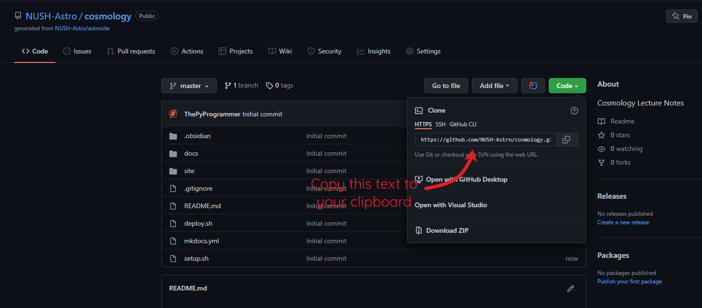
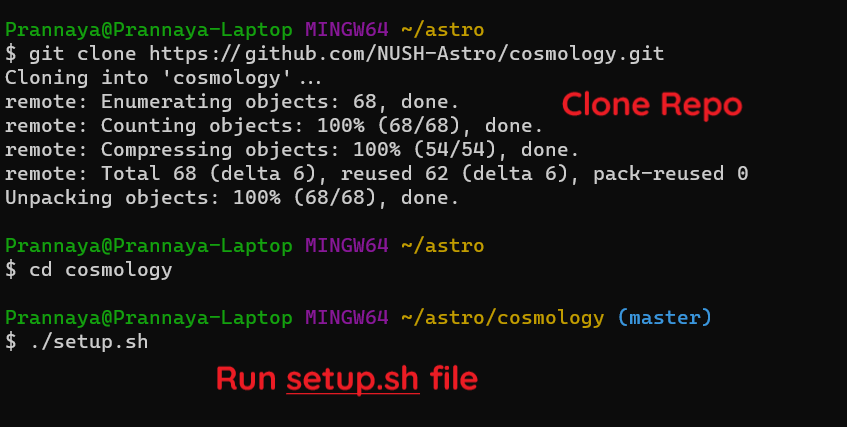
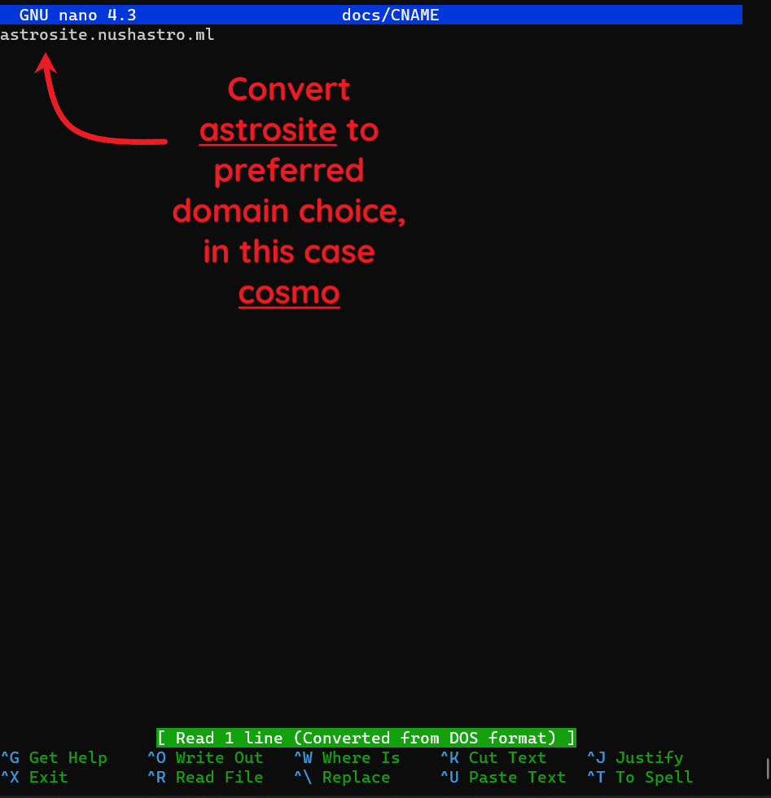
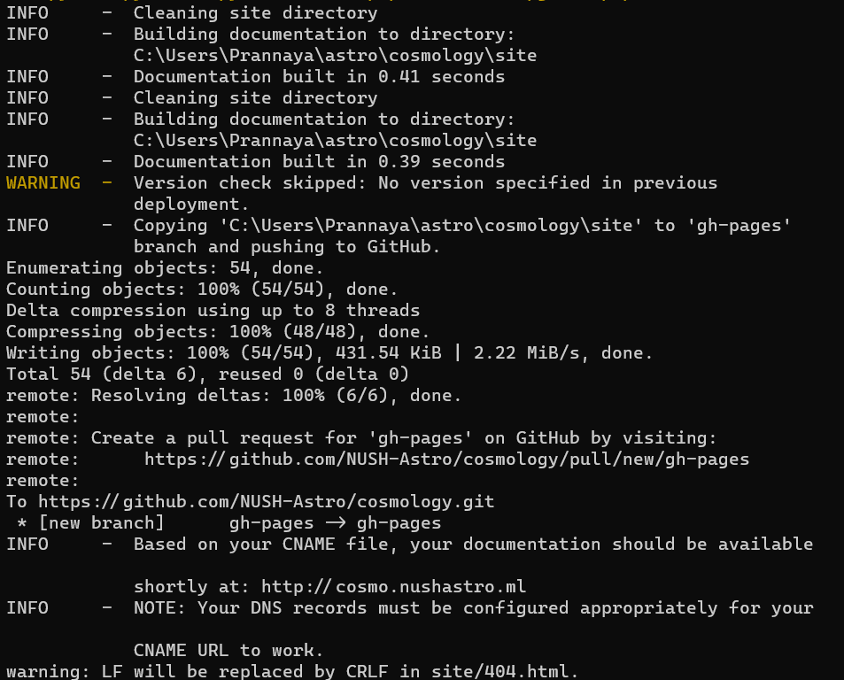
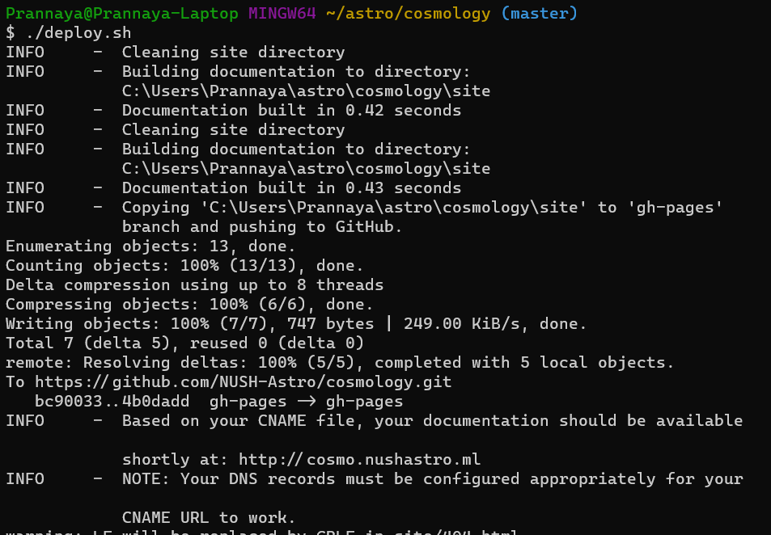
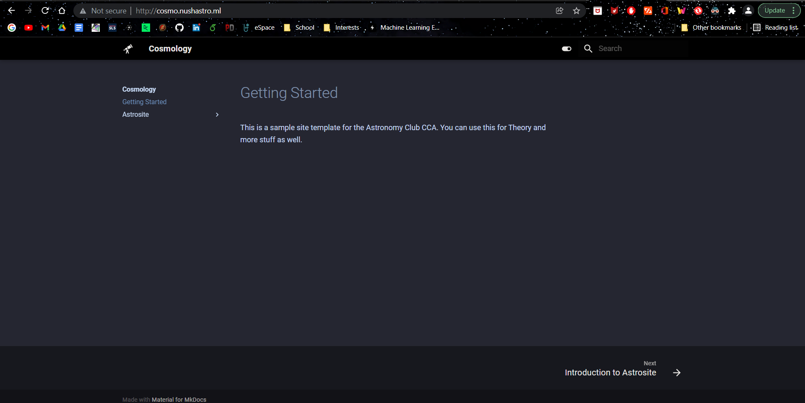

Getting Started
How do you use astrosite? Here's a guide for you.
Step 1: Create a Repo
Create a repo by going to the astrosite repo and clicking "Use this template" as shown below:

This will lead you to another page to generate a repository from this template as shown below. Make sure to create this repo in the NUSH-Astro GitHub Organisation and Provide a useful name and description for the repo. Make sure to make the repo public, otherwise deployment is not possible. Click "Create repository from template" when done.

Step 2: Deal with the Repo
This will lead you to the newly created GitHub Repo, in this case https://github.com/NUSH-Astro/cosmology, and you can now click the "Code" button and copy the Repo address as shown. This will be useful for downloading the repo and then administrating it.

Next, go to your terminal (for the purposes of this tutorial, I am using Git Bash), and clone the repository into a specific folder. Now, move into this newly created folder and run ./setup.sh on some bash-supporting terminal.

Step 3: Set-Up and Installation
This installation expects that you already have Python and Git Installed. If you don't, do install them from relevant sources.
Next, the setup file will install mkdocs and mkdocs-material from pip , allowing you to now convert these markdown files to HTML. Following this, it will open a Nano tab to input the name of the site. Make sure to convert astrosite to your preferred domain choice (domain choices have been stated, but can be added by contacting Prannaya), in this case cosmo. Press Ctrl-O, Enter and Ctrl-X when you are done.

Now, the setup file will deploy the site and you should probably be able to see the following messages:

This is mostly unimportant, but the main thing to note is that the CNAME file has been updated.
Step 4: Minor Bugfixes
Now, need to open the mkdocs.yml file to change the name of the Site, simply by typing nano mkdocs.yml as shown.

From here, it opens the Nano Tab and you can change the site name from AstroSite to any name, containing some reference to the topic at hand. In this case, it has been renamed to Cosmology. Press Ctrl-O, Enter and Ctrl-X when you are done.

Step 5: Deploy and Commit
From here, you can now deploy the site again by typing out ./deploy.sh as shown.

From here, the site is now being deployed, and you can visit it in about 3 or 4 minutes. Till then, you can push the repo up by doing the following commands:

After this, you can simply access it from the site, in this case http://cosmo.nushastro.ml/, as shown below:

And there you have it! A working site with editability based on Markdown (which also happens to support MathJax). I hope this helps you use this site. Thank you.